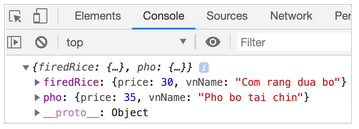

There are at least two ways to delete a property-value pair from an object, the first one is the one you learned in class, to use delete keyword (which you already learned).. The second one is to create a new object without the property-value pair and just use the new object from then. For example:
const oldData = {
firedRice: {
Price: 30,
vnName: ‘Com rang dua bo’
},
noddle: {
price: 20,
vnName: ‘My tom chanh’
},
pho: {
price: 35,
vnName: ‘Pho bo tai chin’
},
};
If noddle removal is needed, a new object named newData is created containing data from oldData object, without noddle property. This gives the benefit of preserving the old data so it can be traced back when debugging in the future.
console.log(newData);
// Console

This can be done elegantly using JS 6 rest operator, learn it and write an example to demonstrate your understanding. If you need hints, find them at the end of this homework